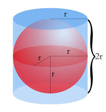
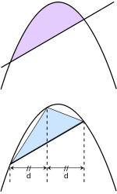

ARCHIMEDES
ARCHIMEDES
First, Archimedes is known to have invented his own Greek number system, so that he could accommodate more of his invented numbers. According to some, the greatest invention of Archimedes is 'integral calculus'. Using this, he measured the section of areas surrounded by geometric figures. He broke the sections into a number of rectangles and then added the areas together. This principle is known as 'integration'. Also a part of the discovery of 'integral calculus' is 'differential calculus'. He calculated ways to approximate the slope of the tangent lines of his figures.

Archimedes is especially important for his discovery of the relation between the surface and volume of a sphere and its circumscribing cylinder. He found that the surface area of any sphere of radius r is four times that of its greatest circle (in modern notation, S=4πr2) and that the volume of a sphere is two-thirds that of the cylinder in which it is inscribed (leading immediately to the formula for the volume, V = 4/3πr3).
In his writings, Archimedes shows that π, the ratio of the circumference to the diameter of a circle, is shown to lie between the limits of 3 10/71 and 3 1/7. Archimedes' approach to determining π, which consists of inscribing and circumscribing regular polygons with a large number of sides, was followed by everyone until the development of infinite series expansions in India during the 15th century and in Europe during the 17th century. He is also credited with accurate approximations (expressed as ratios of integers) to the square roots of 3 and several large numbers.
 'The Quadrature of the Parabola'- Archimedes proved that the area enclosed by a parabola and a straight line is 4/3 multiplied by the area of a triangle with equal base and height.
'The Sand Reckoner'- he set out the impossible task of calculating the number of sand grains the universe could contain. He challenged that it was not impossible to do, even if sand grains were too large to be counted. His friend King Gelo thought this was hardly possible. To solve the problem of sand grains, Archimedes invented a system based around the myriad or uncountable in Greek. It also denoted 10,000 in the Greek number system. He fixed a number system using powers of myriads (100 million) and finally calculated the number of sand grains in the universe as 8x1063 .